基本配置
顶部菜单栏
menu:
XXX:
path: /
ico: ico-name
XXX:
path: /XXX
ico: ico-name
submenu:
XXX:
path:
ico:
ico-name是图标在Font Awesome里面的图标的名称-
path是你想让图标链接到的地址 -
submenu是二级标题
博客简介
头像
avatar: https://
写出头像在云端存储的连接
个人简短介绍
aboutme: XXX
简短的个人介绍，在文章页面的侧边栏里展示
成立日期
since: 2019
博主联系信息
contacts:
E-mail: " mailto:o_oyao@outlook.com || fas fa-fw fa-envelope"
...
# 微博: " ||fab fa-fw fa-weibo"
Twitter: " ||fab fa-fw fa-twitter"
- 在每个页面底部展示联系信息
- 使用font awesome图标
添加新的图标
格式：XXX: "url_for(XXX)||icon name of XXX"
url_for(XXX)：这里的是图标对应的连接icon name of XXX：是font awesome里面的图标的<i class="XXX"></i>标签里面class的全部内容
自带页面
首先，使用hexo自带的命令hexo new page "page name"创建新页面
Archive页面
这个页面是不用创建就自带的。
Tags，Categories页面
-
首先创建名为
tags的页面hexo new page tags -
在
/source/tags/index.md里面添加layout: tags
友链接
创建友链接页面
hexo new page links
如何添加友链接
-
找到
/source/links/index.md -
在=== ===包裹的段落里面添加一条
links:
- group_name: Friends
description: Beautiful or handsome friends
items:
- url: https://
img: https://
name: XXX
description: Opps, he says nothing.
group_name表示对链接进行分组description是每一个分组的描述items里面具体是一条一条的友链接- 每一条友链接有四个信息：网站地址，头像地址，网站名称， 网站描述
- 每一条连接都以一个
-开头，格式如上
注意：里面的看起来像是tabs的缩进，其实是空格，而且必须是空格
首页文章的样式
首页的大图展示
homeCover:
fixed: true
url: https://
首页的图是否是固定的，不随着滑动而向上移动
首页文章列表的样式
clampLines: 8
clampLines 是首页每篇文章的描述内容展示多少行，是一个整数数字
文章页面
文章内容过期提醒
Warning:
on: true
Days: 200
Content: "This article was written {} days ago. The content of the article may be out of date."
在文章前面显示
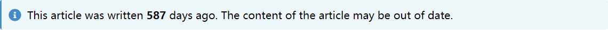
- 如果在
warning.on上打开，则每篇文章都自带提醒 - 还可以在每篇文章的
md文件里添加Warning: true来打开文章的过期提醒 Days是过期的天数限制Content里面的{}，就是Days的数值，剩下的文字都可以任意修改。
文章页面的样式
postStyle:
authorInfoPosition: right
contentStyle: github
color: "default"
-
authorInfoPosition：是目录和个人简介头像的位置，有左、右两个位置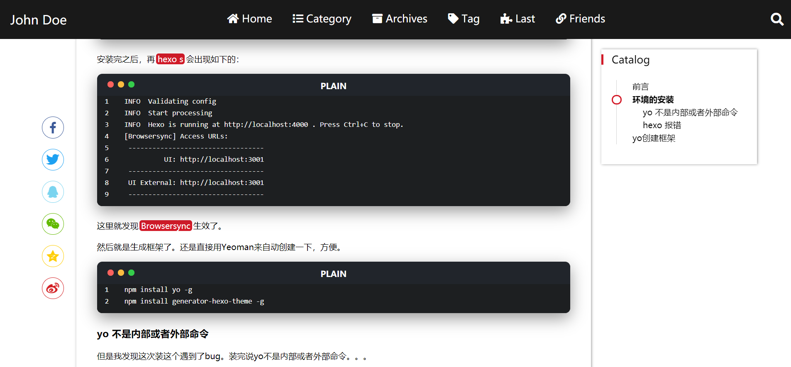
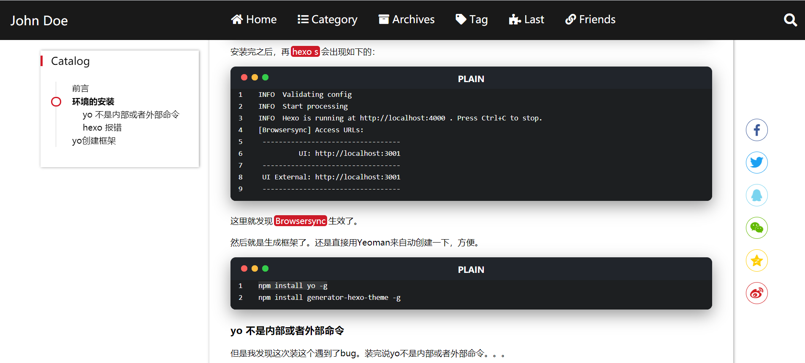
-
contentStyle：文章页面的样式选项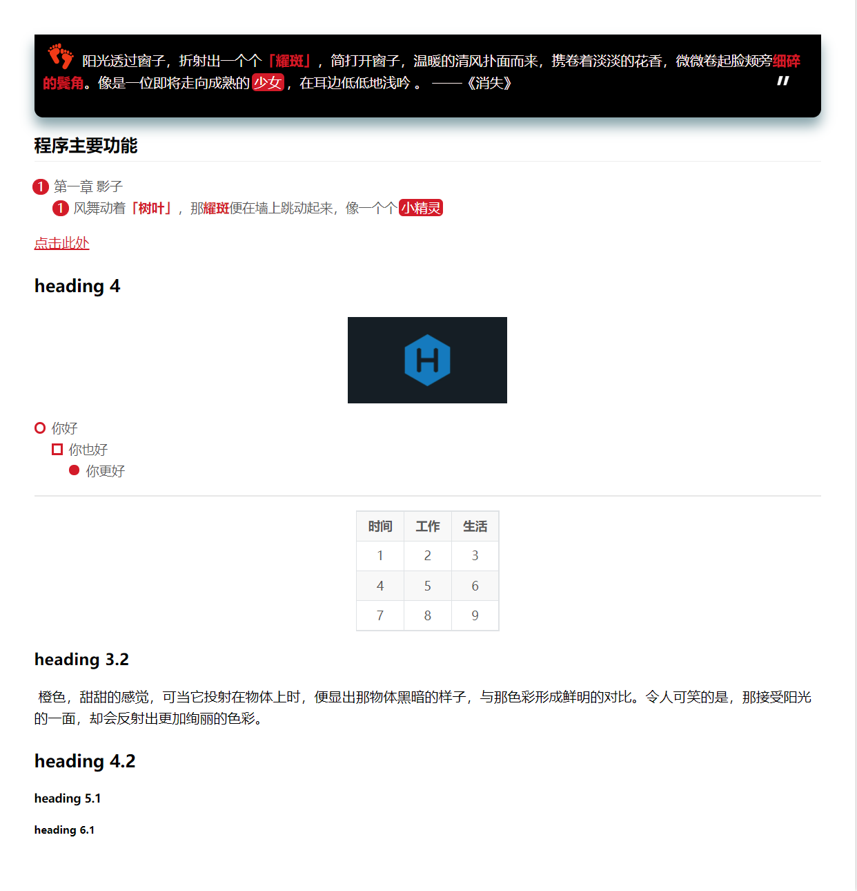
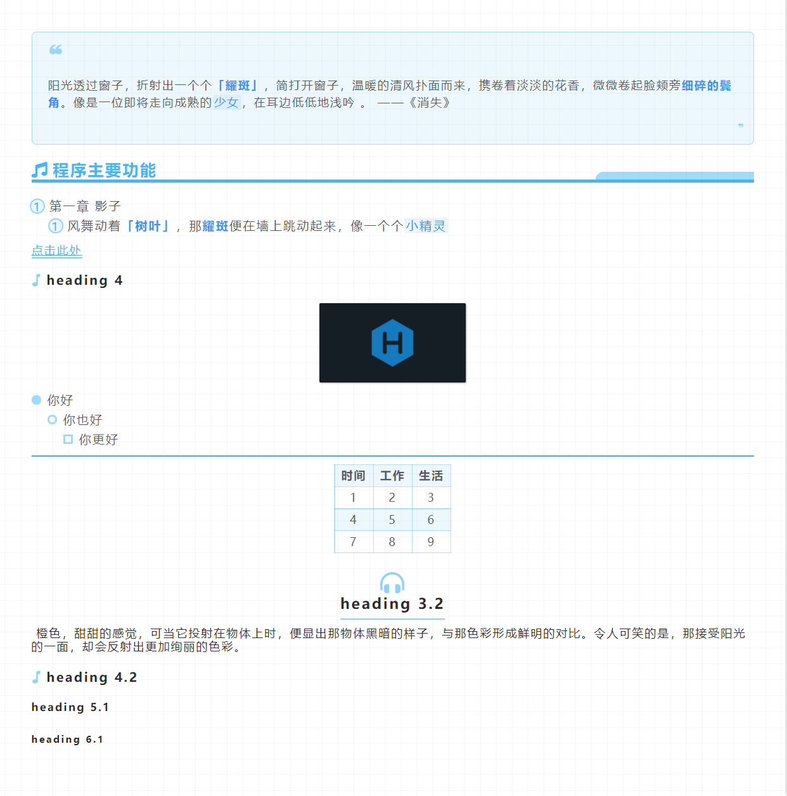
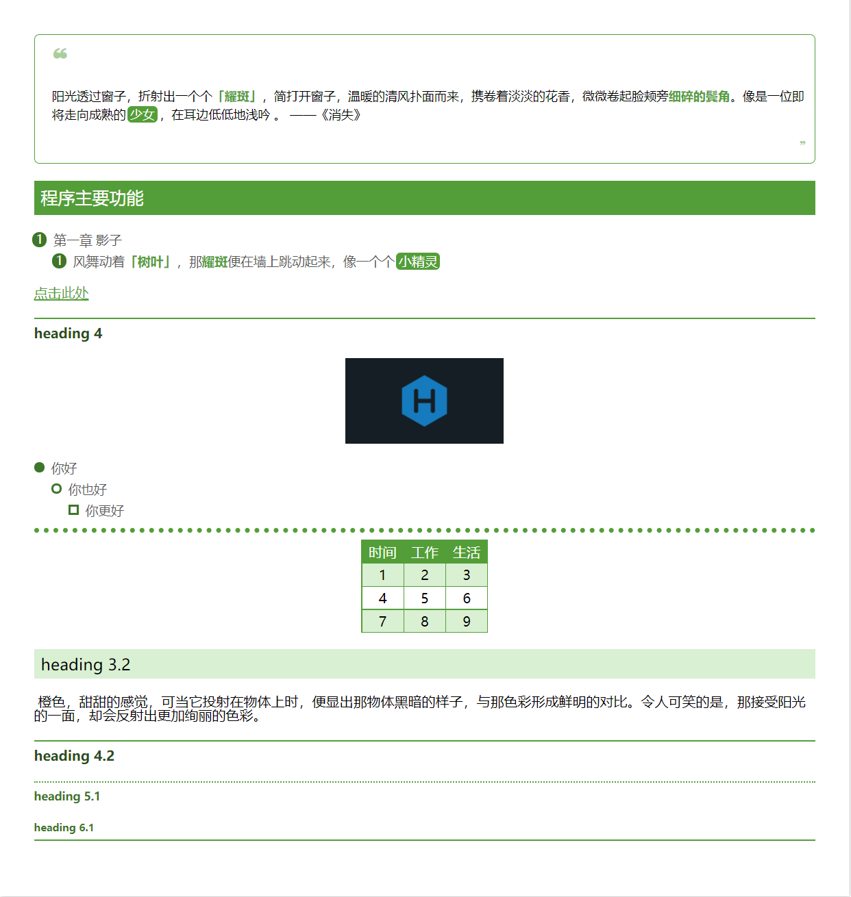
-
color：文章页面的主题颜色 -
默认就是
default - 还可以填入颜色的名字，是在
css里面可用的颜色名字 - 可以填入
#XXXXXX，以#开头的以十六进制的颜色
Archive页面
archiveStyle:
style: normal
type: center # basic, split, center
color: pink
style样式：comment-shape、normal
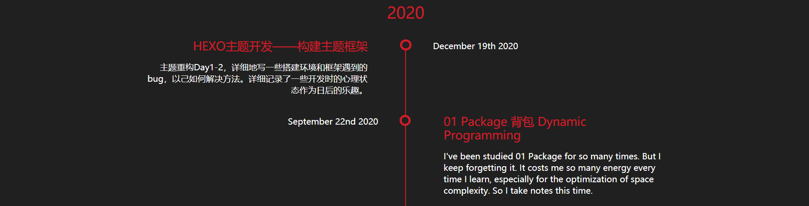
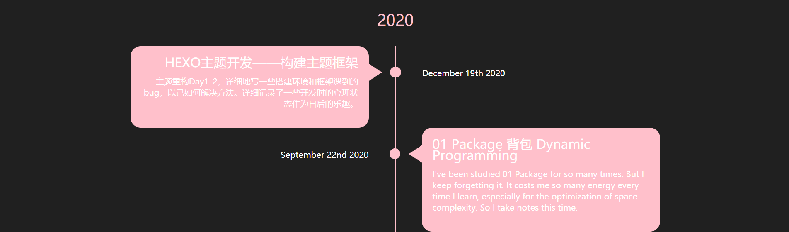
type结构：basic、split、center
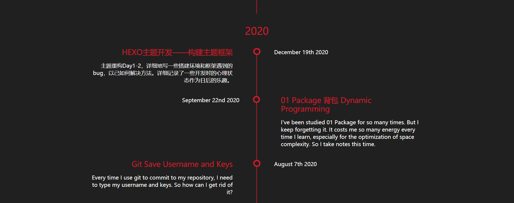
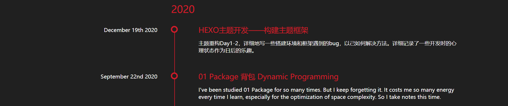
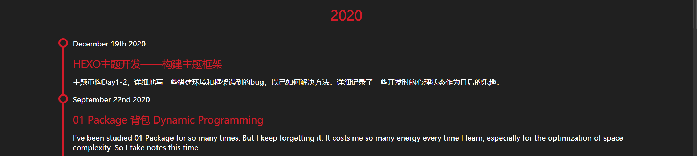
Paginator分页
多文章分页
paginationNumberBackground: true
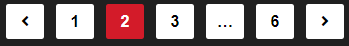
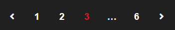
单文章分页
postPagePaginationStyle: card # normal picture card
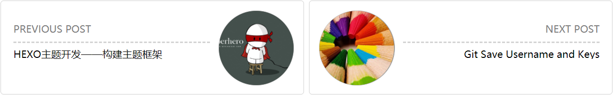
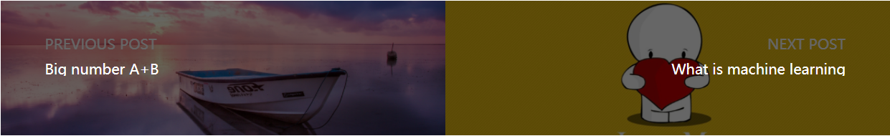
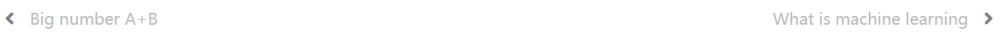